Константин Викторович Лихолат
Директор

Группа компаний «Паллада» — ведущий российский центр архитектурной керамики, объединяющий научную реставрацию, современное производство и исследовательскую деятельность. С 2001 года мы возрождаем традиции использования художественной и строительной керамики в архитектуре, адаптируя исторические технологии для современных задач
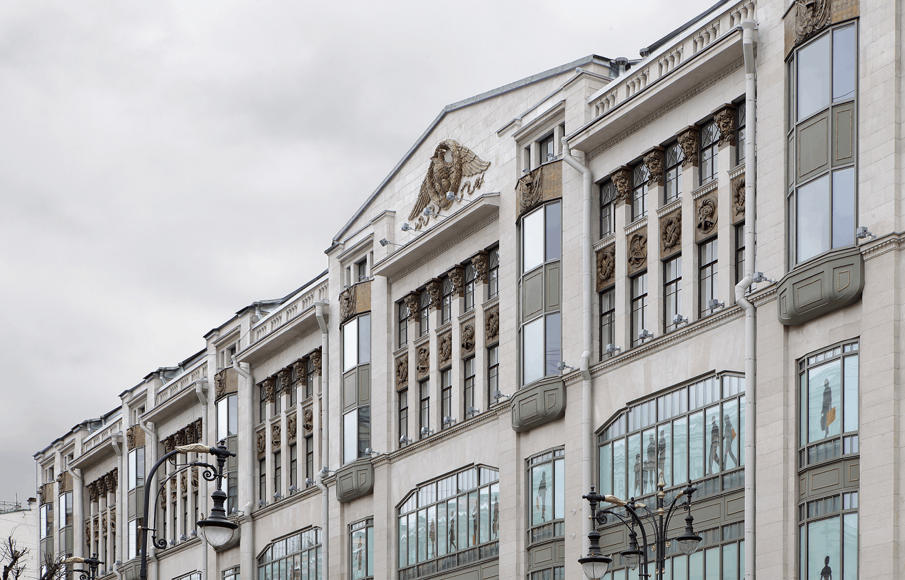
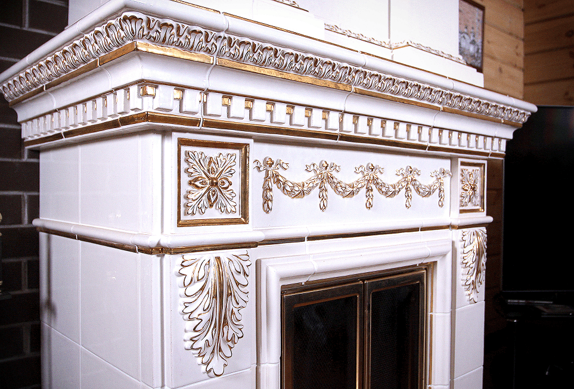
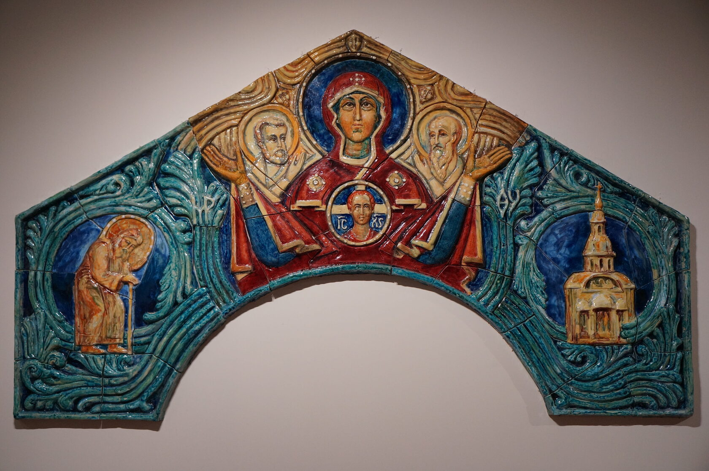
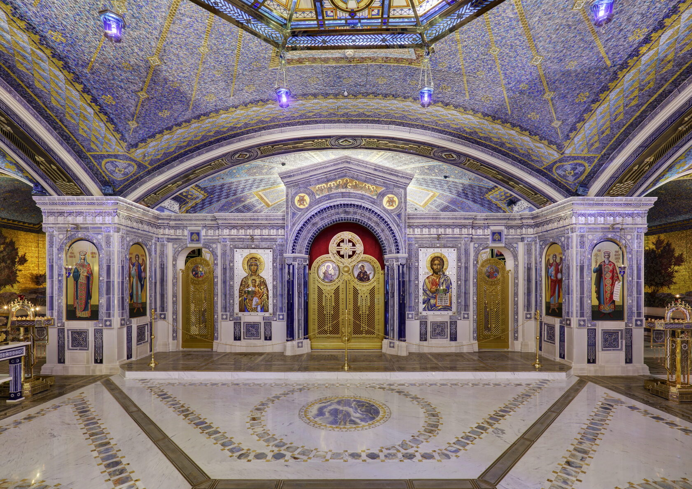
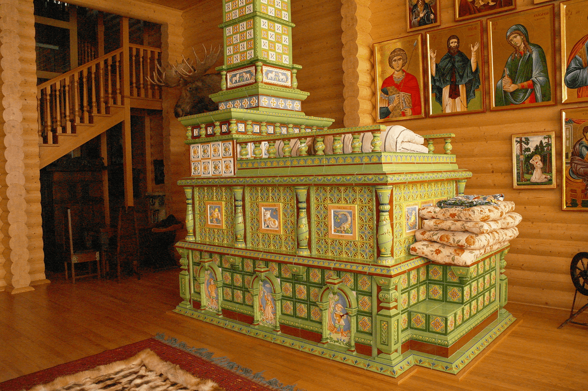
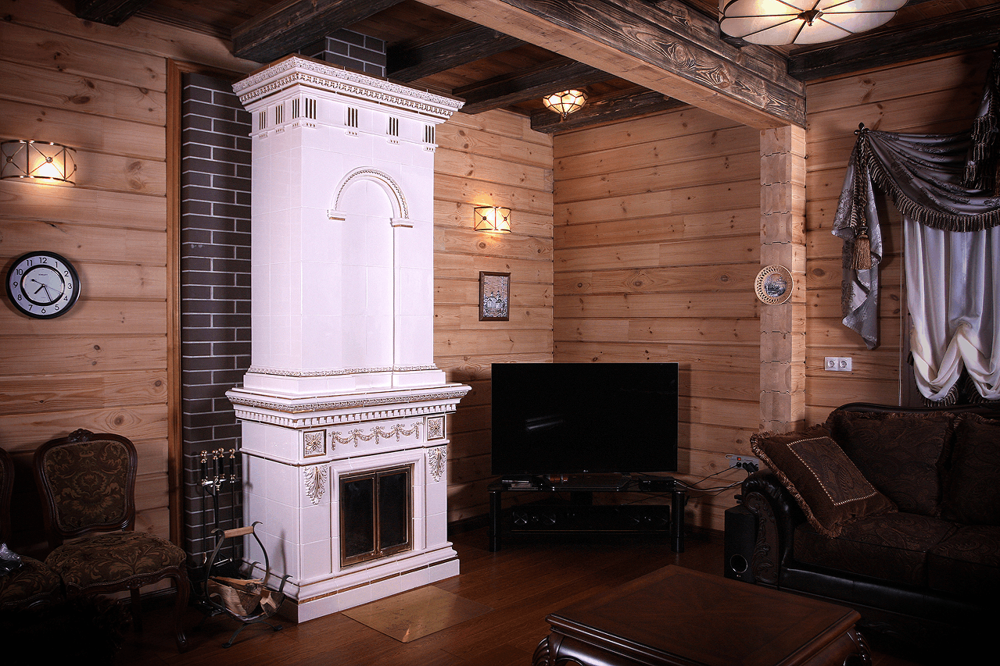
Сегодня «Паллада» — это экосистема профессиональных подразделений, обеспечивающая реализацию проектов любого масштаба:
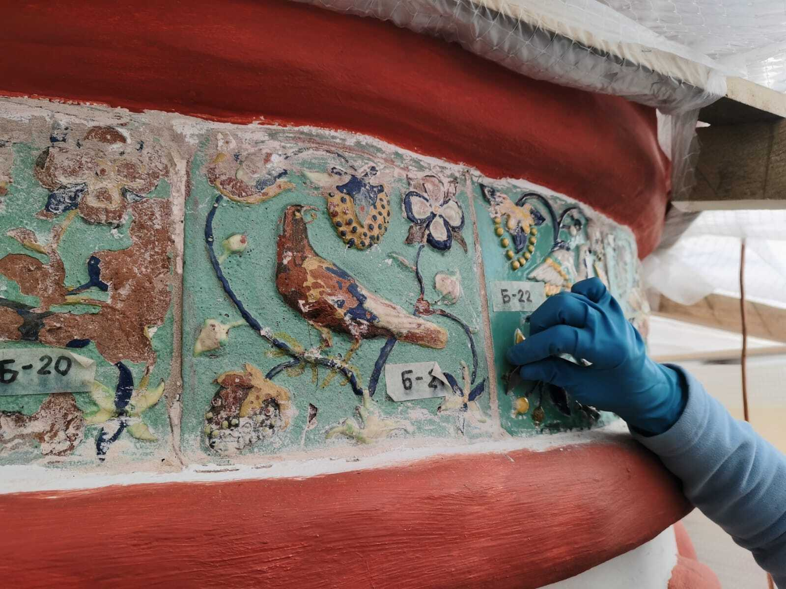
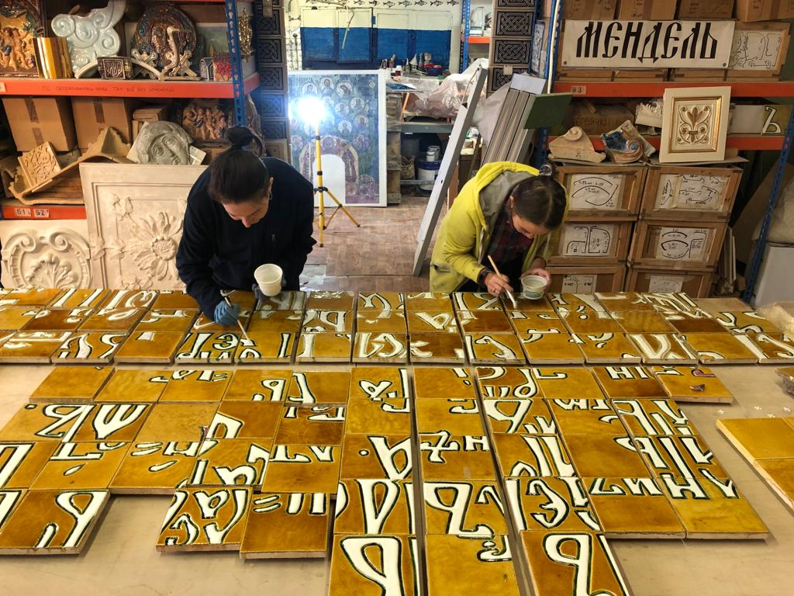
Научным фундаментом компании является Музей архитектурной художественной керамики «Керамарх», открытый в 2018 году в Петропавловской крепости совместно с Государственным музеем истории Санкт-Петербурга. Это уникальный пример партнерства реставрационной компании, частного и государственного музеев, где в единой экспозиции представлены шедевры архитектурной художественной керамики из собраний Государственного Эрмитажа, ГМЗ «Петергоф», Музея-усадьбы «Кусково» и других значимых музейных и частных коллекций.
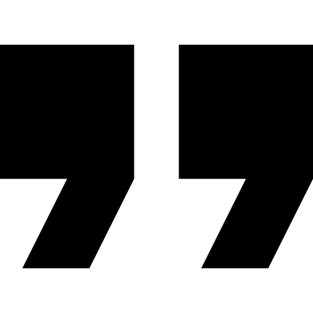
Мы не просто производим керамику — мы формируем профессиональную среду. ГК «Паллада» издает научный журнал «Архитектурная керамика мира», проводит международные конференции и симпозиумы, а также выпускает серии книг, посвященных истории и технологии материала.Перейти на сайт музея
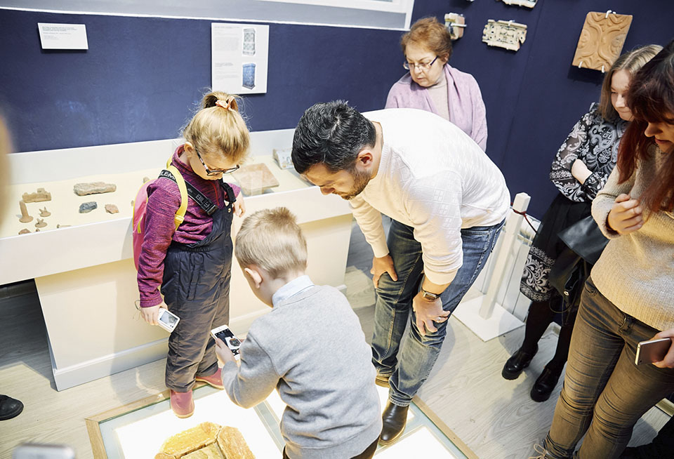
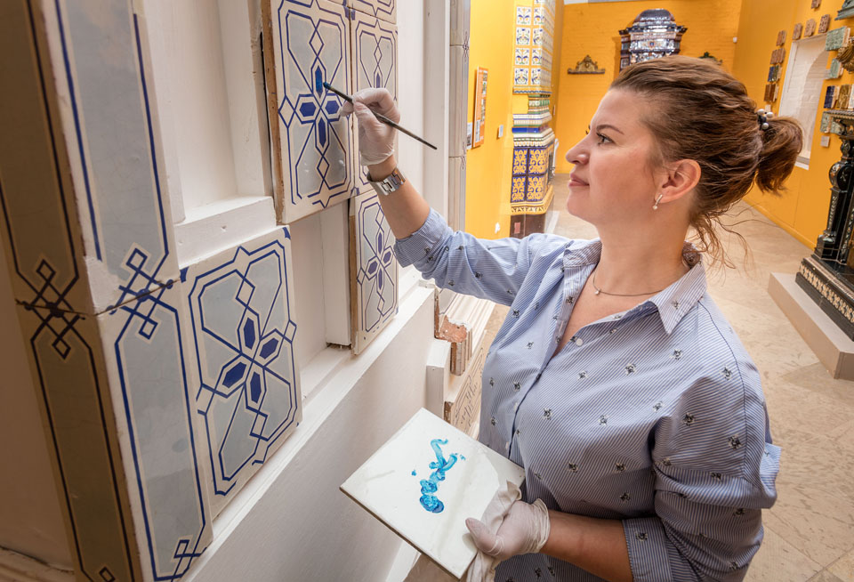
Мы убеждены, что реставрация — это не создание визуального подобия, а сохранение идентичности объекта. Наш подход базируется на девяти ключевых принципах:
Разработка художественного решения, в том числе с опорой на исторические и архивные материалы
Изделия на фасадах существуют в агрессивной среде. Методики музейной реставрации не могут быть механически перенесены на архитектурные объекты
Любая работа начинается с анализа причин разрушения: технологических, инженерных или эксплуатационных. Пока причина не устранена, эффект от реставрации будет иллюзорным
Если сохранение подлинника in situ невозможно, фрагменты подлежат музеефикации и становятся источником данных для научного воссоздания
Мы критически изучаем историческую технологию. Если она была ошибочной или не обеспечивала долговечности, мы тщательно подбираем составы масс и глазурей, исключая повторное разрушение
3D-сканирование и лабораторные исследования не заменяют ремесло, а усиливают его точность.
Формовка, подгонка и роспись — это ручные операции. Только так достигается нюансировка, соответствующая историческому образцу.
Монтаж, водоотведение и конструктивные узлы — неотъемлемая часть работы с архитектурной керамикой. Инженерная ошибка способна разрушить даже идеальную керамику
Мы принципиально не заменяем архитектурную керамику имитациями. Это разрушает материальный смысл памятника.
Команда «Паллады» объединяет реставраторов, художников-керамистов, архитекторов, инженеров и исследователей. Междисциплинарный подход позволяет нам решать задачи на стыке исторической достоверности и современных строительных технологий»
— Лицензия на осуществление деятельности по сохранению объектов культурного наследия (памятников истории и культуры) народов Российской Федерации № МКРФ 00284 от 23 ноября 2012 г.
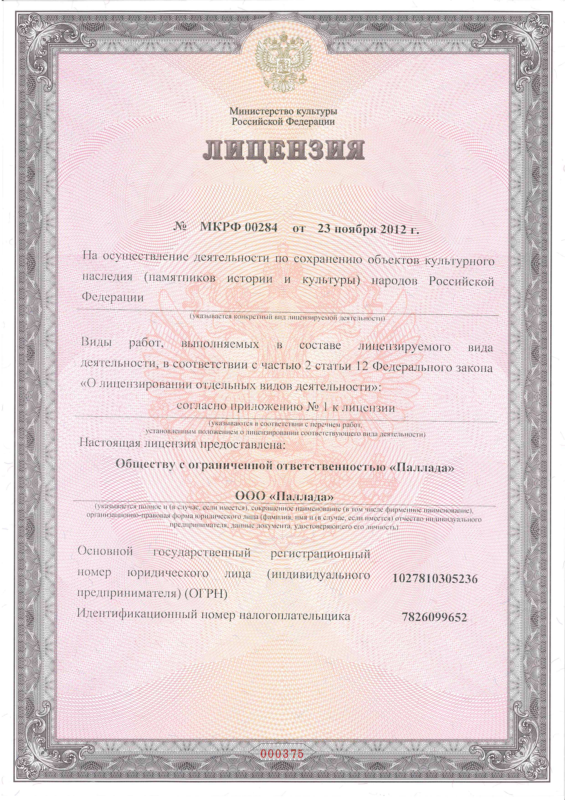
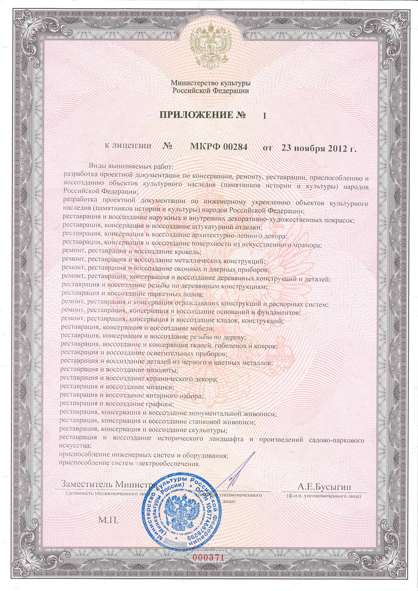
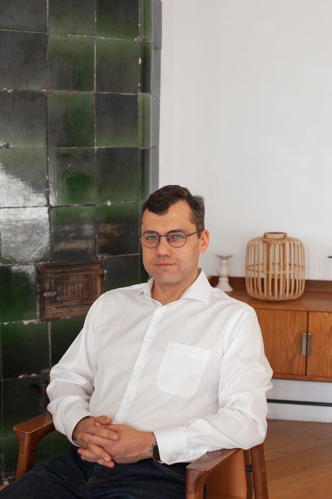
Основатель и директор реставрационно-производственной компании «Паллада»
Инженер-конструктор, искусствовед, аттестованный художник-реставратор архитектурной керамики. Директор Музея архитектурной художественной керамики «Керамарх», главный редактор научного журнала «Архитектурная керамика мира».
С 2001 года руководит проектами «Паллады» в области реставрации, воссоздания и производства архитектурной керамики.
Исследование и реставрация подлинных элементов, разработка решений для восполнения утрат, подбор керамических масс, глазурей и режимов обжига. Аттестован Министерством культуры России как художник-реставратор архитектурной керамики.
Инженерное образование позволяет работать не только с художественными, но и с конструктивными задачами. Константин Лихолат — автор запатентованной конструкции керамического купола, применённой при создании фарфоровых куполов храма Святого благоверного князя Игоря Черниговского в Переделкине.
В работе над объектами соединяет натурные и архивные исследования, изучение исторических технологий и производственные эксперименты. Курирует проекты от обследования и разработки методики до изготовления и монтажа керамических элементов.
Автор и соавтор более ста научных и научно-популярных работ. Совместно с Андреем Роденковым выпустил книги о российских керамических мастерских, художниках-керамистах и исторических изразцовых печах. В 2025 году вышло их совместное исследование «Изразцовые печи Петербурга. Заводы Великого княжества Финляндского».
Константин Лихолат — автор идеи и директор музея «Керамарх». Его частное собрание вместе с коллекцией Государственного музея истории Санкт-Петербурга стало основой музейной экспозиции в Петропавловской крепости.
Музей, журнал «Архитектурная керамика мира», исследовательские экспедиции и профильные конференции формируют научную базу, которую «Паллада» использует в реставрационной и производственной работе.